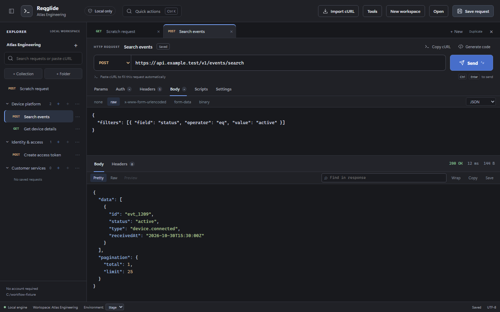

Make every request count.
Compose HTTP requests, explore responses, and work with GraphQL, WebSocket, SSE, and gRPC profiles.
YOUR APIS, IN ONE PLACEA powerful API client that feels right at home.
Build, test, and organize your APIs in a workspace
that stays on your machine.

01 THE EVERYDAY TOOLKIT
The familiar tools you reach for,
in a focused, local workspace.
Compose HTTP requests, explore responses, and work with GraphQL, WebSocket, SSE, and gRPC profiles.
YOUR APIS, IN ONE PLACESwitch environments, reuse variables, and keep Secret and Local values in your operating system’s credential store.
LOCAL · STAGE · PRODUCTIONAdd pre-request scripts and response tests. Run collections with data files, iterations, and exportable reports.
SCRIPT. TEST. ITERATE.Collections, nested folders, request tabs, and searchable history keep your next request close at hand.
A WORKSPACE THAT MAKES SENSEPaste cURL straight into the URL bar. Import Postman collections or OpenAPI files and keep moving.
AN EASIER WAY TO GET STARTEDReadable workspace files, local backups, custom proxies, and TLS settings fit the way your team builds.
NO ACCOUNT REQUIRED02 FAMILIAR, FROM DAY ONE
Start with a request. Add the right environment. Keep your checks beside your code. A good API workflow should feel this natural.
Your first request in Reqglidecurl --request GET \
'https://api.example.com/v1/projects' \
--header 'Accept: application/json' \
--header 'Authorization: Bearer {{access_token}}'03 BETTER TOGETHER
Reqglide is independent, open-source, and just getting started. Bring your ideas, find a rough edge, or build the feature you’ve been missing. There’s room for you here.
04 A FEW GOOD QUESTIONS
No. Reqglide works with local workspace files and your machine’s credential store. You can organize requests and use the app without creating an account. Your API endpoints still need to be reachable.
Yes. Import Postman collections and environments, OpenAPI or Swagger files, or paste cURL into the URL bar. Imports report compatibility warnings; Reqglide does not yet implement every Postman feature.
Yes. The source is available on GitHub under the MIT license. You can inspect, use, modify, and contribute to the project under those terms.
The current downloadable preview is for Windows x64, with EXE and MSI installers. macOS and Linux distribution are on the roadmap.
This is an early preview for evaluation. Installer signing, clean-machine acceptance, and further reliability work remain in progress. Explore it with development or test environments and share what you find. The release-readiness checklist is public.
YOUR NEXT REQUEST STARTS HERE
Local-first. Open-source. Ready for your next idea.
Early preview · unsigned installers.
Read the installation notes before installing.
SHA-256 · Windows EXE
Checksums are included with each release.All release checksums ↗